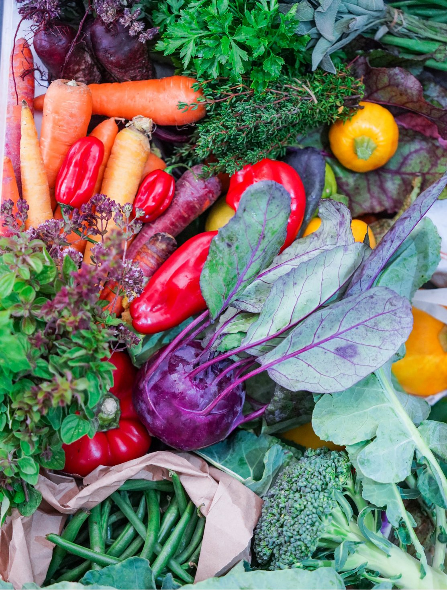

Не секрет, что сейчас, когда в супермаркетах и на рынках глаза разбегаются от выбора, мы часто берем либо ненужные в принципе продукты, соблазнившись их внешним видом, либо слишком большой объем или количество, поддавшись на скидку. В итоге практически всегда, а особенно после праздников, у нас возникает ситуация с забитым холодильником, полным разных остатков.
Отведите для ревизии время, скажем, целый час, не делайте ее наспех. Проводите ревизию холодильника регулярно, например, раз в 2 недели.
Начните с верхней полки, достаньте все и проверьте сроки хранения и состояние продуктов. Продукты, у которых срок хранения истек, выбросьте без жалости. Те продукты, дата окончания срока хранения которых уже близко, пусть будут на виду — вам нужно поскорее пустить их в дело.
В 2,5 стакана кипящей воды положить корочки пармезана (около 200 г) и варить 1 час, затем процедить. Сварить до мягкости в отдельной кастрюльке 100 г коричневой чечевицы, обсушить и слегка обжарить на оливковом масле. Отдельно обжарить на оливковом масле, а потом потомить под крышкой до мягкости в течение примерно получаса смесь свежих овощей (цукини, спаржа, морковь, сладкий перец, брокколи — всего по 100–150 г). Измельчить овощи в блендере, добавив немного свежей зелени (мята, тимьян, орегано). Добавить овощное пюре и чечевицу в сырный бульон, перемешать и прогреть, приправить по вкусу.
Поджарить в форме для запекания на оливковом масле среднюю порубленную луковицу, добавить маленький рубленый перчик чили, пару измельченных зубчиков чеснока и щепотку кумина, слегка прогреть. Выложить в форму слегка размятый отварной картофель (350–400 г), всыпать пару щепоток куркумы и перемешать. Запекать до хрустящей золотистой корочки, около 30 минут. Готовую картошку посолить и подавать с натуральным йогуртом, посыпав рубленой свежей мятой.
Выложить на противень 500–600 г темного винограда, положить сверху пару веточек тимьяна, посыпать ложкой тростникового сахара, сбрызнуть столовой ложкой оливкового масла и столовой ложкой качественного винного уксуса. Запекать 5–10 минут при 220 °С, пока виноград не начнет лопаться. Нарезать кубиками 50 г чеддера и 125 г камамбера. Достать противень с виноградом, разложить между ягодами кусочки сыра и 50 г крем-фреша. Посыпать горстью сбрызнутых оливковым маслом листьев шалфея и вернуть в духовку на 5 минут, чтобы сыр начал плавиться. Подавать с хлебом, грецкими орехами и красным вином.